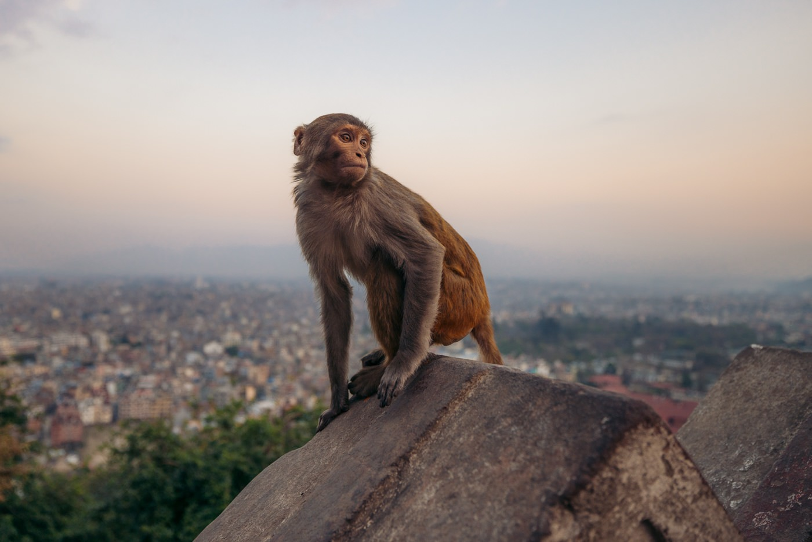

Swoyambhunath Buddha Stupa


Isn't it funny? An ancient religious monument is given a name 'Monkey Temple' also the astonishing fact that it is included in the World Heritage Sites' list. Yes. Presenting you Swoyambhunath Temple, a complex atop a hill in the Kathmandu Valley, west of Kathmandu city in Nepal.From the top of hill,it has a really beautiful view of the city. There's a big stupa in the middle of the temple that's covered in prayer flags. You can walk around the stupa and spin the prayer wheels. There are also a lot of other smaller temples and shrines around the area. The stupa at Swoyambhunath is one of the most recognizable landmarks in Kathmandu and is a popular tourist destination. Swoyambhunath is one of the most sacred Buddhist sites in Nepal and is also revered by many Hindus. Remember the name 'Monkey Temple', this name is given as there are a lot of monkeys that live here. If you ever visit Kathmandu, I recommend you this place. But be careful with the activities monkeys do.
Its is said that the Kathmandu Valley was once filled with water. The only land that was visible on surface water had a bloosm of Lotus . Then the Boddhisatva: a person with wisdom like Buddha, called Manjushree came and saw the possibility of human settlement there and thus cut the Chovar gorge with his sword which led water to flow out of the valley. Then the stup was raised from the place of Lotus. It is also said that Manjushree while raising the hill grew a long hair where lices were grown. Those lices later on transformed into the monkeys.
Swoyambhu is probably the most sacred among Buddhist pilgrimage sites. For Tibetans and followers of Tibetan Buddhism, it is second only to Boudha. Swayambhu is the Hindu name. The complex consists of a stupa, a variety of shrines and temples, some dating back to the Licchavi period. A Tibetan monastery, museum and library are more recent additions. The stupa has Buddha's eyes and eyebrows painted on. Between them, the number one (in Nepal script) is painted in the fashion of a nose. There are also shops, restaurants and hostels. The site has two access points: a long staircase leading directly to the main platform of the temple, which is from the top of the hill to the east; and a car road around the hill from the south leading to the south-west entrance. When reached the top we can see the stupa that consists of a dome at the base which represents the world, on top of which is a cube structure, painted with eyes of Buddha looking in all four directions depicting that kathmandu valley is under the survillence of the Buddha's eyes. There are pentagonal toranas present above each of the four sides of the cube with Buddha reliefs on them. Behind and above the toranas there are thirteen tiers symbolizing that sentient beings have to go through the thirteen stages of spiritual realizations to reach enlightenment. Above all the tiers there is a small space above which the Gajur is present. There are five gilt Buddha shrines at the base of the stupa, all with a Buddha statue inside them. Equally five Tara shrines can be found here, but only four of them are gilt and actually house a Tara statue. The shrine of Vajradhatishori Tara, or White Tara, is empty.